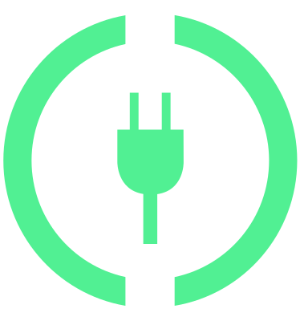

Câble secteur remplaçable
Fiche pour le raccordement au boîtier de commande
Fiche de raccordement au secteur
Câble de charge avec boîtier de commande
Fiche dans la prise de recharge du véhicule
Boîtier de commande
Connecter et déconnecter le câble de réseau remplaçable Câble de recharge universel.
Boîtier de commande
Grâce au boîtier de commande, la prise de recharge est hors tension jusqu’à ce qu’elle soit branchée à la prise de recharge du véhicule.
Après le raccordement du câble de recharge à la prise secteur, tous les voyants lumineux du boîtier de commande s'allument brièvement en rouge.
Une fois le câble de recharge branché à la prise de recharge du véhicule, le boîtier de commande effectue automatiquement un autotest. Tous les voyants d’avertissement et de contrôle s’allument brièvement et s'éteignent les uns après les autres
Bouton marche/arrêt avec témoin lumineux et fonction de limitation du courant de charge
Témoin lumineux de la prise de courant (branchée sur la prise secteur)
Témoin lumineux Véhicule
Témoins lumineux du boîtier de commande
Bouton de réinitialisation avec témoin lumineux
Affichage de fonctionnement au moyen de voyants lumineux sur le boîtier de commande

allumé
Câble de recharge connecté au secteur et prêt à charger.
clignote
La batterie haute tension est en cours de chargement.
Affichage de défaut Câble de recharge universel.